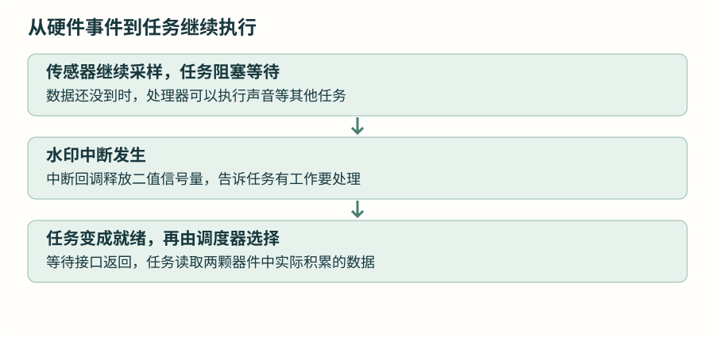

传感器数据到了：从标志位走向信号量
沿用 LSM6DSOX 水印中断。先看任务怎样停止反复查询，再让中断唤醒它，最后解释当前项目为什么还设置了等待超时。
1 · 已经有中断，任务还在等什么？
IIC 联合采集篇已经配置好运动传感器每秒 104 组、光学传感器每秒 100 组。运动传感器累计约 26 组后产生水印事件，INT1 引脚连接主控 PB4，主控通过外部中断知道该接走一批数据。
裸机程序在中断里设置标志，主循环轮询这个标志。若把主循环改成任务，仍然反复执行 if (sensor_ready)，就没有利用任务阻塞能力。希望它暂时退出就绪队列，直到事件到来或最长等待时间到达。

2 · 把“有事待处理”保存在哪里？
二值信号量可以理解成一个由内核管理、只保存“无通知”或“有通知”的对象。释放操作使通知可被取得；获取操作取得通知。如果没有通知，获取者可以阻塞等待。内核同时处理检查和等待，避免应用自己拼接“检查标志、清标志、让出执行”的时序。
文件级声明
#include "semphr.h"
static SemaphoreHandle_t sensor_ready;main() 中创建同步对象 · 早于可能使用它的中断
sensor_ready = xSemaphoreCreateBinary();
if (sensor_ready == NULL) Error_Handler();句柄 sensor_ready 指向这个同步对象。xSemaphoreCreateBinary() 创建后没有可获取的通知，所以任务第一次获取会等待。创建失败时返回 NULL，不能带着空句柄继续启用中断。
独立实验中，GPIO 先配置好 PB4 上升沿，但暂不使能 EXTI4 中断；创建对象、初始化驱动并创建任务，再在调度器运行后的任务入口使能对应中断。连接的传感器还应按驱动要求清除已有事件条件。这让实验从“对象、使用者都已准备好”开始。
3 · 先读懂等待接口，再放回驱动
任务循环内的核心关系
if (xSemaphoreTake(sensor_ready, pdMS_TO_TICKS(30)) == pdTRUE) {
/* 已经取到通知：在这里读取传感器数据。 */
}第一个参数指明取哪个对象，第二个参数是最长等待多少个系统节拍。已有通知就立即取得；没有通知就阻塞，最多等 30 毫秒对应的节拍数。返回 pdTRUE 表示取得，返回 pdFALSE 表示等到了超时仍没有取得。
取到通知后，它会被消费掉。下一轮没有新事件时，任务继续等待。这里既不是精确的 30 毫秒采样，也不是每隔 30 毫秒必须读取一次传感器。
4 · 中断怎样发出通知？
主控 STM32U5 使用上升沿回调名称。将下面逻辑放入独立实验中唯一一份同名回调，不要和裸机篇的标志位实现同时保留：
中断回调 · sensor_ready 必须已经有效，IRQ 优先级必须允许调用内核
void HAL_GPIO_EXTI_Rising_Callback(uint16_t pin)
{
if (pin == GPIO_PIN_4) {
BaseType_t higher_task_woken = pdFALSE;
xSemaphoreGiveFromISR(sensor_ready, &higher_task_woken);
portYIELD_FROM_ISR(higher_task_woken);
}
}xSemaphoreGiveFromISR() 是中断环境使用的释放接口。中断不允许像任务一样阻塞等待，因此这里不能换成普通等待调用。变量 higher_task_woken 先置为假，内核可以通过它告知本次操作是否让更高优先级任务需要运行。
portYIELD_FROM_ISR() 根据这个结果请求在合适的中断退出位置切换任务，不是在回调中直接调用传感器任务函数。即便唤醒，读取总线和算法计算仍由任务执行。
| 优先级 | 当前项目的数值习惯 | 含义 |
|---|---|---|
| FreeRTOS 任务 | 数字越大越优先 | 就绪任务之间怎样选择。 |
| Cortex-M 外部中断 | 数字越小，紧迫程度越高 | 中断之间怎样响应。 |
| 允许调用内核的中断范围 | 项目门槛为 5，当前相关中断使用 6 | 使用库层未移位优先级；0—4 不能调用这些 FreeRTOS 中断接口。 |
这个门槛来自项目的 configLIBRARY_MAX_SYSCALL_INTERRUPT_PRIORITY，并不是只要函数名有 FromISR 就能从任何中断调用。独立实验还要核对 NVIC 优先级分组及实际配置，按当前处理器端口要求设置。
5 · 把原来的读取代码放回任务
先准备静态接收数组与观察变量。沿用已经学过的驱动：运动读取接口返回实际组数，光学接口也返回实际组数。这里先接走数据，算法仍按前面各篇讲过的有效样本数处理。
文件级缓冲和调试观察量
static int16_t acceleration[26 * 3], gyroscope[26 * 3];
static uint32_t red[32], infrared[32];
static volatile uint8_t motion_count, optical_count;任务主体 · 驱动、app_tick 和 ble_uart_process 均为前章已介绍接口
static void SensorTask(void *argument)
{
(void)argument;
for (;;) {
if (xSemaphoreTake(sensor_ready, pdMS_TO_TICKS(30)) == pdTRUE) {
motion_count = LSM6DSOX_GetFifoBatch(
acceleration, gyroscope, NULL, 26);
optical_count = MAX30102_GetFifoBatch(red, infrared, 32);
}
app_tick();
ble_uart_process();
}
}此片段用于观察事件读取及界面、通信的连续运行。app_tick() 推进应用和界面维护，ble_uart_process() 处理收到的协议字节；它们在这一任务中顺序执行。实际 Sensor_Task 还会在取得完整运动批次后，按实际光学组数进行算法处理，最后一篇再沿源码对齐。
若采用本节的受控中断启用方式，在任务进入循环前执行 HAL_NVIC_EnableIRQ(EXTI4_IRQn)。前提是上一节安排的对象创建、引脚和传感器配置都已完成。
6 · 为什么等 30 毫秒？通知能积累多少次？
当前任务还维护界面和通信。若永远等待传感器事件，传感器不再发事件时，后面的维护工作也无法继续。设置最长等待时间，让任务即使没有传感器新批次，也有机会运行这些工作。30 毫秒是现有工程的安排，要结合实际处理耗时和界面需求评估。
二值信号量最多保存一个待取通知。连续释放两次而中间没有取走，不会变成两批样本；释放时若对象已经可用，会返回失败。是否丢失样本要看器件缓冲是否仍保存数据、读取是否赶得上，而不能用信号量次数代替样本数量。
实验可以在调试器观察两项读取组数和回调计数，再断开事件输入，确认超时后界面维护仍能推进。读取速度赶不上产生速度时，要查处理耗时和器件溢出，增加通知对象数量不能替代实际数据容量。
资料与源码
本章按仓库当前 FreeRTOS V11.2.0 与 STM32U5 端口核对接口。图解描述执行关系，任务耗时和硬件行为需在实际工程观察。